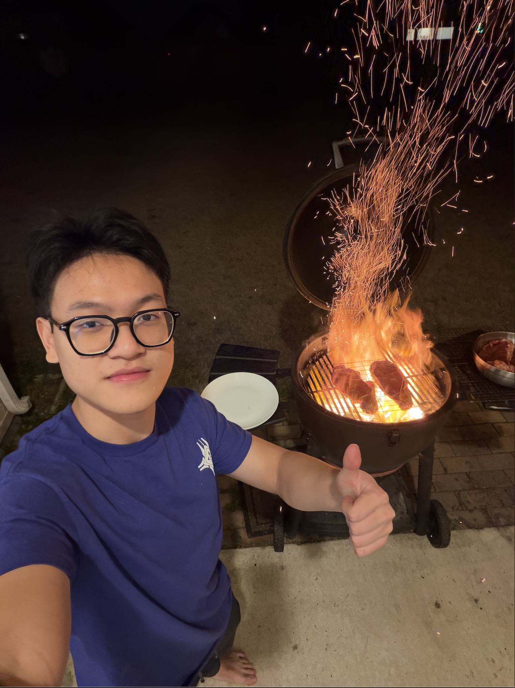
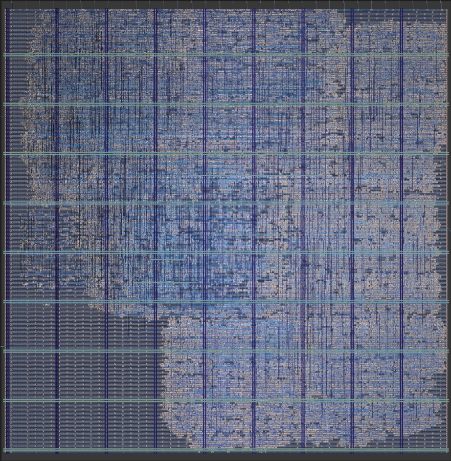
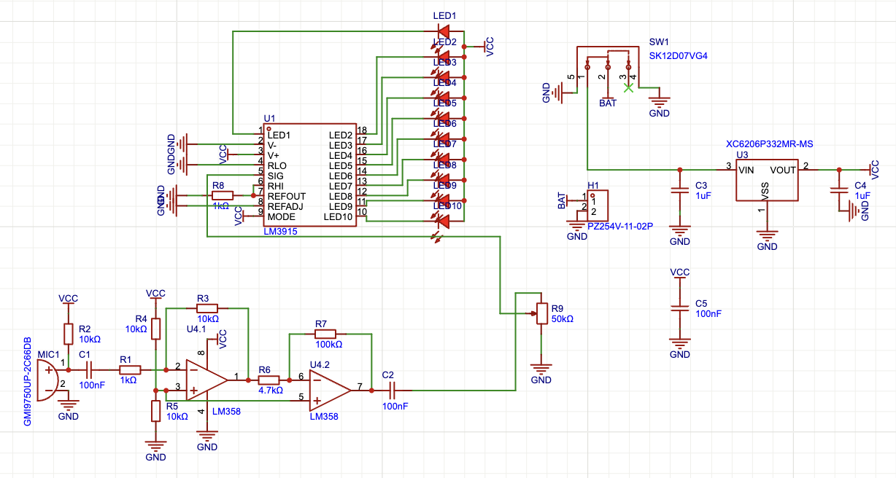
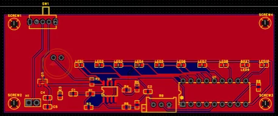
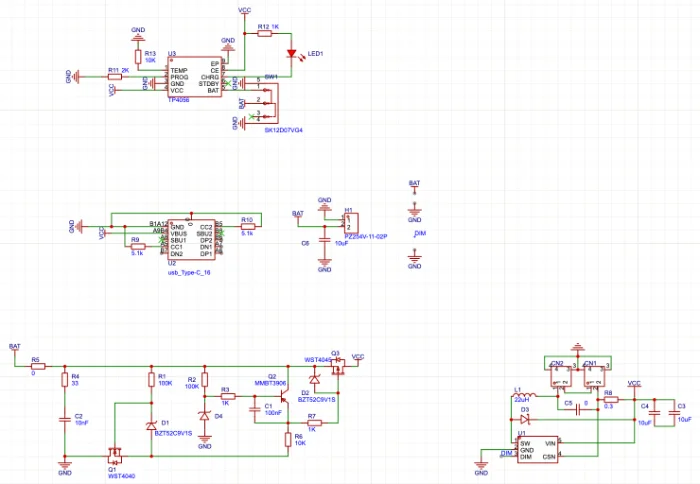

volume i
who, where from, and why chips
kiet vu

Computer Engineering, Purdue ’28 · GPA 3.93
Computer architecture: GPUs, processors, memory systems.
Currently seeking summer 2027 internships.
1I'm currently a sophomore at Purdue. I love understanding how machines and processors actually work. My work revolves around exploring and modeling different architectures, from building a RV32I CPU from scratch to modifying memory systems in the most cited GPU simulator.
Toolbox
expected dec 2028
B.Sc. in Computer Engineering · West Lafayette, IN
3.93 / 4.0
GPA
Presentation with Distinction,
Spring 2026 Undergraduate Research Conference
coursework ahead
ASIC Design Laboratory
Microprocessor Systems and Interfacing
Computer Design and Prototyping
Semiconductor Devices
Advanced C Programming
Origin
Born and raised in Vietnam, moved to the US for college. I picked Purdue because it is a good engineering school, not because I knew what I wanted to do. No regrets. Also, learning about US tip culture is why I have barely eaten out since my first semester.
Hardware
Everyone around me just said “get into semiconductor”, which I barely understood. Freshman year was a wander through board-level PCB design, RFIC, analog. Then over winter break I installed XSchem, tinkered for a week, and decided I would never touch analog again. Picked up Harris & Harris instead. The rest is history.
4Quirks
I prefix my repos with HOMEMADE- because that is literally what they are: no templates, no IP catalog shortcuts, my own microarchitecture every time. Downside: I think in state machines now. Probably not healthy.
Motivation
Long term: work on real silicon at a company whose chips people actually run, travel a lot, and stop being afraid of tipping. Short term: survive coursework while doing all of these side quests.
5volume ii
silicon, simulation, and systems
kiet vu
“No templates, no IP catalog shortcuts — my own microarchitecture every time.”
on the homemade- prefix
no. 01
accel-sim · cuda · nsight · ptx/sass — jul – aug 2026
19.5% → 2.4%
mean L2 write error, across 32 benchmarks
−94% → +2.6%
L2 write error on one benchmark, after a correlation fix
2 fixes
merged upstream into Accel-Sim / GPGPU-Sim
what I did
•Fixed a parser bug that broke PTX-mode simulation on every CUDA 11+ toolchain, and added an L2 write-hit counter that lines up with NVIDIA’s profiler.
•Root-caused an FP64 pipeline crash, and a correlation bug that mis-attributed local-memory traffic.
•Found an unmodeled 4× over-count in L1→L2 writes, confirmed it with a microbenchmark, and prototyped a merge buffer; 19 of 32 benchmarks stayed bit-identical.
no. 02
systemverilog · computer architecture — feb – mar 2026

what I did
•A 5-stage pipelined RV32I core with Harvard memory and a hazard control unit, covering the full base integer instruction set.
•Taken all the way to a verified GDSII layout on Sky130 with LibreLane, in two variants trading speed for area, both with clean STA and LVS signoff.
100%
RISCOF compliance vs. Spike
95.2 MHz
high-speed · 0.551 mm²
58.8 MHz
high-density · 0.427 mm²
no. 03
pim-aware kv-allocation for llm decode — sep 2026
0.77 → 0.96
simulated all-bank DRAM row-hit rate
2.3×
effective PIM bandwidth at vLLM’s 16-token block
85 tests
including five validation gates
what I did
•Found that paged KV-cache allocation destroys the DRAM row alignment processing-in-memory attention relies on, and designed an allocator that fills one geometry-derived region.
•Built a simulator of continuous-batching LLM decode around vLLM v0.2.7’s block allocator, across four workloads.
•Cross-checked it against Ramulator 2 and AttAcc: placement agreed within 0.0023 mean row-hit.
no. 04
verilog · formal verification · rtl-to-gds — aug 2026
312 cycles
replayed bit-exact across 9 outputs
12 ns
timing closed · zero DRC / LVS / antenna
145 cycles
of SAT equivalence proof
what I did
•Jane Street’s ASIC challenge: wrote a GDSII parser and a cycle-accurate gate-level simulator on Sky130 models, then recovered the full schematic.
•Reimplemented it in SystemVerilog and proved it equivalent with a Yosys SAT miter.
Write-up on request.
10no. 05
c++ · doctest · matplotlib — jun 2026
4 × 4
write policies × replacement policies
3C’s
compulsory, capacity, conflict miss classification
what I did
•A configurable single-level cache: set count, associativity, line size, and pluggable replacement (LRU, FIFO, tree-PLRU, random) behind one interface.
•AMAT profiling, and a design-space sweep that emits CSV for the plots.
no. 06
systemverilog — feb 2026 – present
One repo for the standalone RTL blocks, and the smaller datapath pieces they share.
volume iii
research, teams, and the lab bench
kiet vu
aug 2026 – present
Undergraduate Researcher · West Lafayette, IN
•Architected the Ethernet RX datapath for a fixed-function GPU on DE2-115; derived specs from IEEE 802.3, produced RTL block diagrams and state machines for frame detection, CRC-32 validation, address filtering, and CDC buffering
•Designed a custom host-to-GPU command protocol over raw Ethernet with register-write and vertex-stream
aug 2025 – may 2026
Undergraduate Researcher · West Lafayette, IN
•Refactored multiple legacy data source modules to standardized abstract base class architecture, implementing consistent data pipeline, improving maintainability and code reusability
•Eliminating NULL overwrites and integrating 1,800+ historical records into SQLite; centralized configuration consolidating 59 SQL field mappings, 1,000+ station IDs, and 7 database schemas across 7 data sources for 53+ monitoring locations
aug 2025 – may 2026
Electrical team · PCB design
Before I knew I wanted to do RTL, I drew schematics and laid out PCBs for the team’s combat robot. Three boards came out of it: one fabricated, soldered and tested; two stopped at a finished layout.
5What I took from it
Board-level design is where I learned that a design is not done when the schematic is done. On the one board I actually built, footprints were wrong and the first revision did not behave, and I only found out by probing it. That habit — assume it is broken until measured — is the same one I now bring to RTL and to simulator correlation work.
6// 01
lm358 · lm3915 · fabricated
The onboarding project, and the one that taught me the most about circuits and PCBs. Cascaded LM358 op-amps amplify a microphone 45×, and an LM3915 turns that into a 10-segment LED bar.

The one that got built — soldered, probed, and reacting to music.

// 02
layout only
Rechargeable power for the robot’s armor plates. They take hits and have to keep reporting, so this board keeps them powered without a harness running back to the main battery.
Designed and routed; shelved when the team no longer needed it.
9// 03
layout only
Charges the fluorescent projectiles so the rounds glow under the arena’s UV lighting and stay trackable by the referee system. Layout complete, never fabricated.

fin.
To be continued.
volume iv
notes, semester by semester
kiet vu
Fall 2025
first semester
Started my first semester at Purdue exploring board-level PCB design with RoboMaster, data pipelines and collection with EPICS, and a look at RFIC and analog with IEEE MTT-S. At this point I still had no clue about chip design.
2Spring 2026
the core
Through further exploring during winter break, I read DDCA by Harris & Harris cover to cover, then built the RV32I pipeline in February and pushed it through LibreLane to a signed-off Sky130 layout by March. This marks the first start to my chip design journey.
Apart from that, I also presented my research at the Spring Undergraduate Research Conference on my work at EPICS, which earned us the Presentation with Distinction award. This was my first ever research conference.
3Summer 2026
simulators
With no internship secured, I tried to equip myself with more knowledge by writing a configurable cache simulator in C++ in June, before digging into Accel-Sim / GPGPU-Sim in July.
Moreover, I also tackled the ASIC reverse engineering challenge by Jane Street, which taught me a lot about the whole chip design flow. The result is coming.
4Fall 2026
now
Right now, I'm working on the GPU subteam at SoCET, trying to explore the new version of Accel-Sim / GPGPU-Sim while trying to land a research position at AALP (the group that is maintaining this simulator).
5blank pages
The simulation has not started yet. Check back soon.
volume v
a simulation log
kiet vu
Notes on computer architecture, RTL, and the things I break along the way.
1volume vi
say hi
kiet vu
I read every message. Drop me a line and I’ll get back to you.
1the shelf